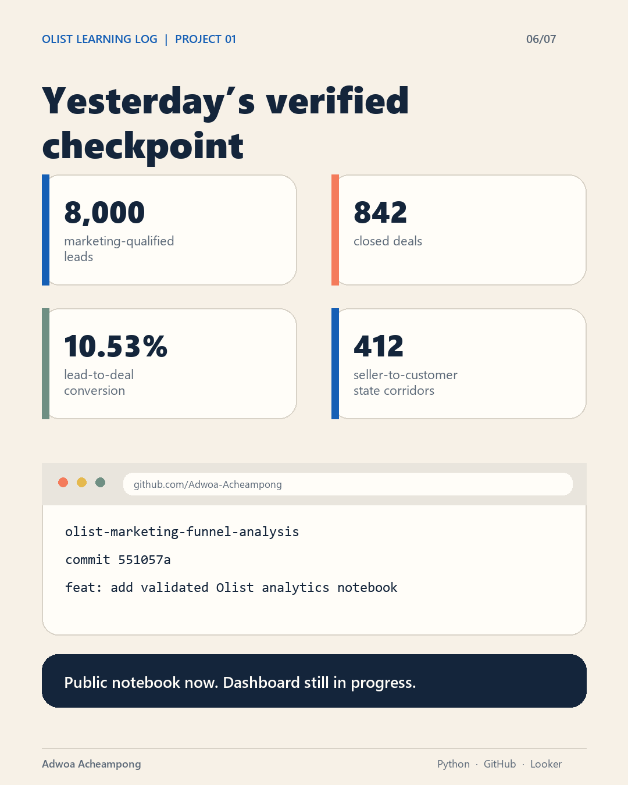

A concise briefing of software, analytics, ERP, artificial-intelligence and systems-design work, including live links, project status, architecture and technical stack.
| Project | Status | Primary domain | Public link |
|---|---|---|---|
| Olist Marketing Funnel & Regional Fulfillment Analysis | IN PROGRESS | Python analytics / data validation | GitHub repository |
| Retail Promotion Response & Substitution Signals | IN PROGRESS | Retail analytics / promotion response | Repository and dashboard in progress |
| Multi-Specialty Hospital Operational Efficiency Capstone | COMPLETED CASE STUDY | Business analysis / operations / healthcare | Full deck and evidence available on request |
| CRM System Upgrade BRD & Change Plan | COMPLETED CASE STUDY | Requirements / solution planning | Full BRD available on request |
| Process Modelling & Secure Workflow Design | COMPLETED LAB PROJECT | BPMN / Mermaid / workflow analysis | Source models available on request |
| Strategic Investment Cost-Benefit Briefing | COMPLETED CASE STUDY | Business case / financial analysis | Full briefing available on request |
| Automotive Sales Analytics: Excel & IBM Cognos | COMPLETED LAB PROJECT | Pivot tables / dashboards / BI | Workbooks and exports available on request |
| Municipal Fleet Equipment Inventory Analysis | COMPLETED LAB PROJECT | Excel analysis / pivot tables | Workbook available on request |
| AGL OPS Command Center | LIVE | ERP / operational analytics | https://agl.software |
| Adinkra Intelligence Systems | ACTIVE / PROTOTYPE | Analytics / AI interface | https://blkkstarhub.com/adinkra-front |
| BLKK Autos | MVP / VALIDATION | Cross-platform commerce | https://blkkstarhub.com/autos-app |
| Blkk Star Hub | PLATFORM BUILD | Digital trade / multi-tenant OS | https://blkkstarhub.com |
| MIRACLE | LIVE | Gamified life operating system | https://miracleapp.site |
| Unified Family Educational ERP | ACTIVE DEVELOPMENT | AI learning / multi-tenant ERP | github.com/Adwoa-Acheampong/Family-Edu-System |
| Building AGL | CONCEPT | Smart safety glasses / AI diagnostics | Concept / no public demo |
| Portfolio Website | LIVE | Personal portfolio / web | https://aacheampong.com |
Status discipline: Implemented technologies are stated as implemented. Where the wider Blkk architecture is still planned or being built, the stack is explicitly labelled designed/planned rather than presented as production-deployed.
A Python case study joining Olist's marketing funnel with Brazilian e-commerce activity to study lead-to-deal conversion, commerce-linked sellers and delivery performance across seller-to-customer state corridors. The project is designed around a core analytical control: preserve the correct business grain before calculating KPIs or building a dashboard.

seller_id.mql_id and passed the documented join, reconciliation and chart-quality checks.| Marketing funnel | 8,000 marketing-qualified leads; 842 closed deals; 10.53% lead-to-deal conversion |
| Commerce linkage | 380 commerce-linked deals; 45.13% commerce-link rate |
| Delivery analysis base | 97,811 eligible seller-order records across 412 seller-to-customer state corridors |
| Tools | Python, pandas, Matplotlib, Jupyter, GitHub Codespaces, Git / GitHub; Looker Studio planned for the interactive report |
The Python analysis, data-grain controls and validation are complete. Dashboard-ready exports, the four-view Looker Studio report, denominator notes and the one-page operations brief are the next milestones. Findings remain descriptive and are not presented as causal savings or client work.
A retail analytics case study using the 84.51° Complete Journey 2.0 dataset to examine store-week sales patterns, promotional discounts, category revenue and private-label versus national-brand mix. Because the source does not provide complete promotional-exposure evidence, the work is framed as descriptive association and substitution signals rather than causal marketing lift.
Category selection, store-week aggregation, high-versus-low discount comparisons, within-store trend checks and sensitivity analysis remain in progress. The final deliverables will be a dashboard, a one-page category-manager brief and a reproducible public repository after independent rerun validation.
| Tools | Python, pandas, SQL using DuckDB or SQLite, Git; Looker Studio or Power BI planned for presentation |
| Methods | Data-quality profiling, receipt-line grain validation, many-to-one join reconciliation, store-week aggregation and sensitivity checks |
Analyzed appointment flow, resource availability, patient feedback and stakeholder evidence for a multi-specialty hospital. The final presentation connects business objectives to requirements, a BRD and provisional RTM, stakeholder engagement, scope controls, current/future process maps, department-level analysis, risk governance and measurable recommendations.
| Source records | 216 appointment rows, 217 feedback rows and 213 resource rows supplied for the case study |
| Validated analytical base | 206 appointment records with known department and status; 210 complete wait-time records; 211 valid feedback scores |
| Requirements work | Problem statement, functional requirements, constraints, acceptance criteria and provisional requirement traceability matrix |
| Process and governance work | Current/future workflows, BPMN-style appointment flow, stakeholder responsibility view, WBS, scope-change process, risk register and mitigation plan |
| Tools | Microsoft Excel / CSV analysis, Microsoft PowerPoint, BPMN-style process mapping, presentation charts and structured business-analysis templates |
Produced a versioned Business Requirements Document for replacing a seven-year-old CRM that had grown from 40 users to more than 180 sales, marketing and customer-success users. The work translates fragmented data, manual effort, weak reporting and limited mobile access into a phased cloud-CRM specification.
| Functional scope | Eight uniquely identified requirements covering unified customer data, pipeline management, analytics, marketing integration, mobile access, workflow automation and system integration |
| Non-functional scope | Performance, security, availability, scalability, browser compatibility and audit requirements, including support for at least 300 concurrent users |
| Migration scale | Scenario plan for 380,000 customer records, 1.2 million activity records and 85,000 opportunity records with a 95% pre-go-live data-quality target |
| Delivery plan | 12-month phased implementation, role-based training, pilot support, adoption monitoring and change governance |
| Success measures | 90% user adoption, 18% sales-cycle reduction, 98% data accuracy and a 12-point customer-satisfaction improvement |
| Tools | Business requirements framework, MoSCoW prioritization, Microsoft document workflow and Gamma presentation design |
Designed a detailed authentication and security flow that traces login, rate limiting, account lookup and status checks, password validation, lockout controls, multifactor-authentication enrollment and challenge, session creation and rotation, risk checks, authorisation, password reset and audit logging.
Modelled an end-to-end onboarding process across Customer, Sales and Operations swimlanes. The process uses start and end events, user and service tasks, exclusive gateways and acceptance, rejection, follow-up and information-request branches from initial service enquiry through account setup, training, go-live support and satisfaction review.
| Notation | Mermaid flowchart syntax and BPMN 2.0 process modelling |
| Tools | Mermaid and bpmn-js BPMN Modeler |
| Business-analysis methods | Swimlane mapping, decision-gateway modelling, exception-path analysis, control-point definition, role handoffs and end-to-end process validation |
| Source evidence | Task3_Mermaid_Diagram.txt and Task4_BPMN_Model.txt; the BPMN file identifies bpmn-js as its exporter |
Converted a cost-and-benefit scenario into an executive decision narrative, combining investment composition, benefit drivers, payback timing, risk framing and governance checkpoints. The presentation was structured for an investment committee rather than as a generic classroom report.
| Year-one investment | $345,000: $245,000 implementation, $65,000 annual maintenance and $35,000 training |
| Annual benefit case | $540,000 across productivity gains ($180,000), customer retention ($210,000) and new sales revenue ($150,000) |
| Decision metrics | 18-month payback, $195,000 Year-one net benefit and $1.2 million projected three-year net benefit |
| Visual analysis | Cost-composition view, benefit-driver comparison and three-year cost/benefit/net-value roadmap |
| Recommendation | Proceed subject to 6-, 12- and 18-month governance and benefit-realization reviews |
Built a dashboard-ready Excel model from 1,200 dealer/model/month records covering 2018–2019. The completed workbook contains four pivot tables and a four-chart dashboard for dealer volume, monthly model profitability, annual dealer profit and model/dealer contribution.
| Data scope | 1,200 records; 5 vehicle models; 10 dealer IDs; 21,597 units sold; $29.97 million aggregate profit |
| Excel methods | Structured tables, four pivot tables, sorting/filtering, monthly and annual aggregation, dealer/model comparisons and dashboard composition |
| Additional vehicle lab | 155 vehicle records across 30 manufacturers and 154 models, with retention formulas, conditional classifications, a manufacturer pivot table and bar, column, pie and sunburst visuals |
Created and exported an interactive-style business-intelligence report combining sales and service views. The sales view reports $78.25 million in profit, 58,118 units sold and an average quantity of 19.37, while the service view compares recalls by model and affected system and segments customer sentiment as positive, neutral or negative.
| Visuals | Model-volume chart, dealer-profit comparison, monthly quantity/profit trend, recall analysis and sentiment filters |
| Tools | Microsoft Excel, PivotTables, PivotCharts, formulas, dashboard layout and IBM Cognos Analytics |
Cleaned and summarized a municipal equipment inventory, then built multiple pivot views to make fleet concentration visible by department and equipment class. The workbook preserves the detailed source table while adding repeatable summary calculations and drillable pivot outputs.
| Data scope | 129 inventory rows covering 26 departments, 15 equipment classes and 2,577 recorded equipment units |
| Formula layer | SUM, AVERAGE, MIN, MAX and COUNT checks beside the structured source table |
| Pivot analysis | Three pivot tables examining equipment totals by department, equipment-class composition within departments and department contribution within equipment classes |
| Selected signal | Transportation accounts for 1,484 recorded units, making it the largest department-level concentration in the workbook |
| Tools | Microsoft Excel, structured tables, formulas, PivotTables, grouping, sorting and inventory reconciliation |
A live, browser-based ERP and staff operations environment for Automobiles Ghana Ltd. It replaced fragmented paper and spreadsheet workflows with a searchable operating system for workshop activity, vehicle inventory, sales, expenses, staff attendance, HR records and management reporting.
| Application type | Web-based ERP / staff hub with operational dashboards |
| Core patterns | Role-based access, QR authentication, Kanban workflow management, searchable structured records |
| Data domains | Workshop job cards, vehicles, sales, inventory, expenses, attendance, HR and management KPIs |
| Analytics layer | Operational dashboards, performance reporting, data validation and decision-support views |
| Framework note | The exact production frontend/backend framework is not documented in the portfolio materials used for this briefing, so it is not overstated here. |
AGL OPS demonstrates requirements analysis, workflow redesign, data structuring, user adoption, executive reporting and impact measurement in a live operational environment.
The analytics and intelligence frontend for Blkk Star Hub. Adinkra is designed to sit above tenant ERP environments and convert authorised operational data into shared analytics, reporting and artificial-intelligence-assisted decision support. A tenant such as AGL can therefore be viewed from both its ERP operations side and its analytics side.
| Frontend | React 19, Vite |
| UI / styling | Tailwind CSS v4, Framer Motion |
| Routing | React Router |
| Data visualisation | Recharts |
| Operational tooling | QR workflows; spreadsheet parsing/import/export via SheetJS (XLSX) |
| Architecture | Multi-tenant analytics interface connected conceptually to Blkk Star Hub's shared backend and central artificial-intelligence layer |
A universal automotive-commerce application for web, iOS and Android and the first sector-specific validation wedge for Blkk Star Hub. It structures vehicle listings, dealer operations, buyer discovery and transaction workflows while providing a path for verified commercial activity to feed the wider data and analytics architecture.
| Application | React Native 0.86 |
| Cross-platform runtime | Expo 57 |
| Routing | Expo Router |
| Styling | Tailwind CSS |
| Motion / interaction | React Native Reanimated and gesture-based interaction |
| Deployment pattern | Single codebase targeting iOS, Android and web; static web bundle / micro-frontend integration within the broader Blkk Star Hub web experience |
A modular, API-first digital trade and business operating system designed to help African MSMEs move from fragmented, locally trusted commerce into structured, verifiable and increasingly financeable operations. The system combines sector-specific commerce frontends with a shared institutional spine for identity, operations, data, analytics, verification, payments, logistics and artificial intelligence.

| Web / mobile | React / Next.js web architecture; React Native / PWA patterns for mobile-first access |
| Primary data | PostgreSQL with JSONB for flexible cross-vertical catalogue and operating records |
| Search | Typesense or Elasticsearch for unified cross-vertical search |
| Performance | Redis for caching/session management; RabbitMQ for asynchronous events |
| Identity / API | JWT authentication, API Gateway and modular service boundaries |
| Distributed workflows | Microservice-oriented services with Saga-pattern orchestration for cross-service transactions |
| Payments / commerce | Designed payment orchestration, escrow-state logic, MoMo/card rails and split-payout workflows |
| Intelligence | Adinkra as the central analytics / artificial-intelligence layer consuming permissioned tenant and transaction data |
The broader architecture includes Autos, Merchant, Farmers and Estate verticals. These remain at different maturity levels and should be read as sector-specific expressions of one shared data, trust and operating-system architecture rather than as four unrelated applications.
A mobile-first life operating system built around faith, focus, stewardship and follow-through. MIRACLE turns personal disciplines such as prayer, study, goals and routines into a more engaging, game-like experience through progress, rewards and reflective interaction.
| Experience | Mobile-responsive web application |
| Interaction model | Gamification, progress tracking, rewards, routines and reflective content |
| Design direction | Personal dashboard and game-like UX intended to make consistent action more emotionally engaging |
| Framework note | The exact production framework, backend and database are not documented in the project materials available for this briefing, so no unsupported framework claim is made. |
A multi-tenant, AI-powered family learning ecosystem that gives different family members age-appropriate learning interfaces while using shared infrastructure underneath. The design combines a React/PWA dashboard, Google Workspace services and an AI orchestration layer for content generation, assignments, knowledge retrieval, grading and progress tracking.
| Frontend | React 19, Vite 6, TypeScript |
| UI | Tailwind CSS 4, Motion, Lucide React |
| State / data | TanStack React Query, React Router DOM 7 |
| Visualisation | Recharts 3 |
| AI SDK | Google GenAI |
| Edge / server | Cloudflare Workers / Wrangler, itty-router, Express, esbuild |
| Build / tooling | TypeScript, Bun lockfile / npm-compatible scripts, Vite, esbuild |
A smart mechanic-safety concept that integrates Meta-glasses-style camera and display technology into protective workshop goggles. Computer vision, machine learning and diagnostic AI would interpret the vehicle, fault data and repair context, then present real-time diagnostic guidance and recommended solutions within the mechanic's field of view.
The planned learning loop would capture task context, diagnostic signals, the repair path selected, the result and any alternative method used by the mechanic. When a task or solution is not already represented in the knowledge base, the verified outcome could become structured training evidence so later guidance improves without removing the mechanic's final judgement.
| Wearable interface | Meta-glasses-style camera and heads-up display technology integrated into workshop safety goggles |
| Operational inputs | Live camera feed, vehicle fault codes, diagnostic readings, service history, repair context and mechanic observations |
| Intelligence layer | Computer vision, machine learning and AI-assisted fault interpretation with real-time diagnostic and repair guidance (planned) |
| Learning loop | Structured capture of mechanic actions, outcomes, previously unseen tasks and alternative successful methods for reviewed model and knowledge-base updates |
| Training sources | Validated workshop outcomes plus licensed or permissioned instructional videos, official mechanical diagnostic and repair materials, and authorised diagnostic-software data; source rights and provenance would be recorded |
| Safety and governance | Mechanic-in-the-loop decisions, confidence indicators, traceable sources and review gates before new field evidence becomes reusable guidance |
| Systems integration | Designed to connect diagnostic activity, learning evidence and recommended solutions with AGL operational and vehicle-service records |
https://aacheampong.com - Personal portfolio deployed through GitHub Pages with a custom domain. The deployed build is a React single-page web application.
https://github.com/Adwoa-Acheampong - Public profile and repositories, including the Unified Family Educational ERP source repository.
Formalising Africa's Informal Economy: Blkk Autos as the Entry Engine for an AI-Enabled Pan-African Trade Operating System (2026). Independent working paper and systems-research project examining the legal, commercial, trust, data-governance and technical architecture required for accountable digital trade infrastructure. Available on request.
Portfolio through-line: Across these projects, the recurring pattern is the conversion of fragmented human activity into structured systems: capturing better data, designing usable workflows, surfacing decision-ready information and progressively introducing artificial intelligence where it can reduce friction without replacing necessary human judgement.